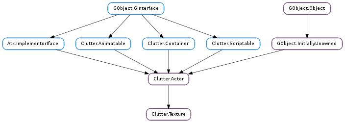

| Subclasses: | Clutter.CairoTexture, ClutterGst.VideoTexture, ClutterX11.TexturePixmap, GtkClutter.Texture, Mx.Offscreen |
|---|
| static | new() |
| static | new_from_actor(actor) |
| static | new_from_file(filename) |
| get_base_size() | |
| get_cogl_material() | |
| get_cogl_texture() | |
| get_filter_quality() | |
| get_keep_aspect_ratio() | |
| get_load_async() | |
| get_load_data_async() | |
| get_max_tile_waste() | |
| get_pick_with_alpha() | |
| get_pixel_format() | |
| get_repeat() | |
| get_sync_size() | |
| set_area_from_rgb_data(data, has_alpha, x, y, width, height, rowstride, bpp, flags) | |
| set_cogl_material(cogl_material) | |
| set_cogl_texture(cogl_tex) | |
| set_filter_quality(filter_quality) | |
| set_from_file(filename) | |
| set_from_rgb_data(data, has_alpha, width, height, rowstride, bpp, flags) | |
| set_from_yuv_data(data, width, height, flags) | |
| set_keep_aspect_ratio(keep_aspect) | |
| set_load_async(load_async) | |
| set_load_data_async(load_async) | |
| set_pick_with_alpha(pick_with_alpha) | |
| set_repeat(repeat_x, repeat_y) | |
| set_sync_size(sync_size) |
| Name | Type | Flags | Description |
|---|---|---|---|
| disable-slicing | bool | r/w/c | Forces the underlying texture to be singular and not made of smaller space saving individual textures |
| filename | str | r/w | The path of the file containing the image data |
| filter-quality | Clutter.TextureQuality | r/w | Rendering quality used when drawing the texture |
| keep-aspect-ratio | bool | r/w | Keep the aspect ratio of the texture when requesting the preferred width or height |
| load-async | bool | w | Load files inside a thread to avoid blocking when loading images from disk |
| load-data-async | bool | w | Decode image data files inside a thread to reduce blocking when loading images from disk |
| pick-with-alpha | bool | r/w | Shape actor with alpha channel when picking |
| pixel-format | Cogl.PixelFormat | r | The Cogl pixel format to use |
| repeat-x | bool | r/w | Repeat the contents rather than scaling them horizontally |
| repeat-y | bool | r/w | Repeat the contents rather than scaling them vertically |
| sync-size | bool | r/w | Auto sync size of actor to underlying pixbuf dimensions |
| tile-waste | int | r | Maximum waste area of a sliced texture |
| Name | Parameters | Return | Description |
|---|---|---|---|
| load-finished | GLib.Error | The ::load-finished signal is emitted when a texture load has completed. If there was an error during loading, error will be set, otherwise it will be None | |
| pixbuf-change | The ::pixbuf-change signal is emitted each time the pixbuf used by texture changes. | ||
| size-change | int, int | The ::size-change signal is emitted each time the size of the pixbuf used by texture changes. The new size is given as argument to the callback. |
| Name | Type | Access |
|---|---|---|
| parent | Clutter.Actor | r |
Bases: Clutter.Actor, Clutter.Container
The Clutter.Texture structure contains only private data and should be accessed using the provided API
| Returns: | A newly created Clutter.Texture object. |
|---|---|
| Return type: | Clutter.Actor |
Creates a new empty Clutter.Texture object.
| Parameters: | actor (Clutter.Actor) – A source Clutter.Actor |
|---|---|
| Returns: | A newly created Clutter.Texture object, or None on failure. |
| Return type: | Clutter.Actor |
Creates a new Clutter.Texture object with its source a prexisting actor (and associated children). The textures content will contain ‘live’ redirected output of the actors scene.
Note this function is intented as a utility call for uniformly applying shaders to groups and other potential visual effects. It requires that the Clutter.FeatureFlags.OFFSCREEN feature is supported by the current backend and the target system.
Some tips on usage:
| Parameters: | filename (str) – The name of an image file to load. |
|---|---|
| Raises: | GLib.GError |
| Returns: | A newly created Clutter.Texture object or None on error. |
| Return type: | Clutter.Actor |
Creates a new Clutter.Texture actor to display the image contained a file. If the image failed to load then None is returned and error is set.
| Return type: | width: int, height: int |
|---|
Gets the size in pixels of the untransformed underlying image
| Returns: | a handle for a Cogl.Material. The material is owned by the Clutter.Texture and it should not be unreferenced |
|---|---|
| Return type: | int |
Returns a handle to the underlying COGL material used for drawing the actor.
| Returns: | a Cogl.Handle for the texture. The returned handle is owned by the Clutter.Texture and it should not be unreferenced |
|---|---|
| Return type: | int |
Retrieves the handle to the underlying COGL texture used for drawing the actor. No extra reference is taken so if you need to keep the handle then you should call Cogl.handle_ref () on it.
The texture handle returned is the first layer of the material handle used by the Clutter.Texture. If you need to access the other layers you should use Clutter.Texture.get_cogl_material () instead and use the Cogl.Material API.
| Returns: | The filter quality value. |
|---|---|
| Return type: | Clutter.TextureQuality |
Gets the filter quality used when scaling a texture.
| Returns: | True if the Clutter.Texture should maintain the aspect ratio of the underlying image |
|---|---|
| Return type: | bool |
Retrieves the value set using Clutter.Texture.set_keep_aspect_ratio ()
| Returns: | True if the Clutter.Texture should load the data from disk asynchronously |
|---|---|
| Return type: | bool |
Retrieves the value set using Clutter.Texture.set_load_async ()
| Returns: | True if the Clutter.Texture should load the image data from a file asynchronously |
|---|---|
| Return type: | bool |
Retrieves the value set by Clutter.Texture.set_load_data_async ()
| Returns: | The maximum waste or -1 if the texture waste is unlimited. |
|---|---|
| Return type: | int |
Gets the maximum waste that will be used when creating a texture or -1 if slicing is disabled.
| Returns: | True if the Clutter.Texture should define its shape using the alpha channel when picking. |
|---|---|
| Return type: | bool |
Retrieves the value set by Clutter.Texture.set_load_data_async ()
| Returns: | a Cogl.PixelFormat value |
|---|---|
| Return type: | Cogl.PixelFormat |
Retrieves the pixel format used by texture. This is equivalent to:
handle = clutter_texture_get_pixel_format (texture);
if (handle != COGL_INVALID_HANDLE)
format = cogl_texture_get_format (handle);
| Return type: | repeat_x: bool, repeat_y: bool |
|---|
Retrieves the horizontal and vertical repeat values set using Clutter.Texture.set_repeat ()
| Returns: | True if the Clutter.Texture should have the same preferred size of the underlying image data |
|---|---|
| Return type: | bool |
Retrieves the value set with Clutter.Texture.set_sync_size ()
| Parameters: |
|
|---|---|
| Raises: | |
| Returns: | |
| Return type: |
Updates a sub-region of the pixel data in a Clutter.Texture.
| Parameters: | cogl_material (object) – A Cogl.Handle for a material |
|---|
Replaces the underlying Cogl material drawn by this actor with cogl_material. A reference to the material is taken so if the handle is no longer needed it should be deref’d with Cogl.handle_unref. Texture data is attached to the material so calling this function also replaces the Cogl texture. Clutter.Texture requires that the material have a texture layer so you should set one on the material before calling this function.
| Parameters: | cogl_tex (object) – A Cogl.Handle for a texture |
|---|
Replaces the underlying COGL texture drawn by this actor with cogl_tex. A reference to the texture is taken so if the handle is no longer needed it should be deref’d with Cogl.handle_unref.
| Parameters: | filter_quality (Clutter.TextureQuality) – new filter quality value |
|---|
Sets the filter quality when scaling a texture. The quality is an enumeration currently the following values are supported: Clutter.TextureQuality.LOW which is fast but only uses nearest neighbour interpolation. Clutter.TextureQuality.MEDIUM which is computationally a bit more expensive (bilinear interpolation), and Clutter.TextureQuality.HIGH which uses extra texture memory resources to improve scaled down rendering as well (by using mipmaps). The default value is Clutter.TextureQuality.MEDIUM.
| Parameters: | filename (str) – The filename of the image in GLib file name encoding |
|---|---|
| Raises: | GLib.GError |
| Returns: | True if the image was successfully loaded and set |
| Return type: | bool |
Sets the Clutter.Texture image data from an image file. In case of failure, False is returned and error is set.
If Clutter.Texture :load-async is set to True, this function will return as soon as possible, and the actual image loading from disk will be performed asynchronously. Clutter.Texture ::size-change will be emitten when the size of the texture is available and Clutter.Texture ::load-finished will be emitted when the image has been loaded or if an error occurred.
| Parameters: |
|
|---|---|
| Raises: | |
| Returns: | |
| Return type: |
Sets Clutter.Texture image data.
| Parameters: |
|
|---|---|
| Raises: | |
| Returns: | True if the texture was successfully updated |
| Return type: |
Sets a Clutter.Texture from YUV image data. If an error occurred, False is returned and error is set.
The YUV support depends on the driver; the format supported by the few drivers exposing this capability are not really useful.
The proper way to convert image data in any YUV colorspace to any RGB colorspace is to use a fragment shader associated with the Clutter.Texture material.
| Parameters: | keep_aspect (bool) – True to maintain aspect ratio |
|---|
Sets whether texture should have a preferred size maintaining the aspect ratio of the underlying image
| Parameters: | load_async (bool) – True if the texture should asynchronously load data from a filename |
|---|
Sets whether texture should use a worker thread to load the data from disk asynchronously. Setting load_async to True will make Clutter.Texture.set_from_file () return immediately.
See the Clutter.Texture :load-async property documentation, and Clutter.Texture.set_load_data_async ().
| Parameters: | load_async (bool) – True if the texture should asynchronously load data from a filename |
|---|
Sets whether texture should use a worker thread to load the data from disk asynchronously. Setting load_async to True will make Clutter.Texture.set_from_file () block until the Clutter.Texture has determined the width and height of the image data.
See the Clutter.Texture :load-async property documentation, and Clutter.Texture.set_load_async ().
| Parameters: | pick_with_alpha (bool) – True if the alpha channel should affect the picking shape |
|---|
Sets whether texture should have it’s shape defined by the alpha channel when picking.
Be aware that this is a bit more costly than the default picking due to the texture lookup, extra test against the alpha value and the fact that it will also interrupt the batching of geometry done internally.
Also there is currently no control over the threshold used to determine what value of alpha is considered pickable, and so only fully opaque parts of the texture will react to picking.
| Parameters: |
|---|
Sets whether the texture should repeat horizontally or vertically when the actor size is bigger than the image size